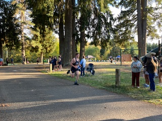
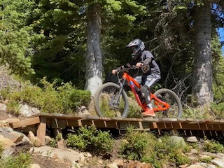

Statement
Mental and Physical fitness is something which I've taken relatively seriously ever since the pandemic happened. It occured to me that sitting in a dark room all day, doing nothing but staring at screens and rarley ever stepping foot outside of the house makes you feel pretty bad. A lot of people struggle to stay mentally and physically fit, with many people often complaining about lack of time. I used to say this as well, but as I've come to realize while you can spend hours in the gym everyday, to significantly improve your physical and mental fitness, which will make just about everything in your life more enjoyable, it really only takes 15-30 minutes out of your day to do a short calethenics workout in your house, go for a jog, meditate, or even just walk around your neighborhood.
Personal Experiences
I run Cross Country, and have a sub 21 minute 5k
I've been mountain biking ever since I was in 7th grade
I've been going to the gym for just about 3 years, and I can bench 225